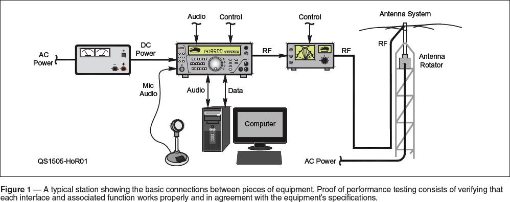
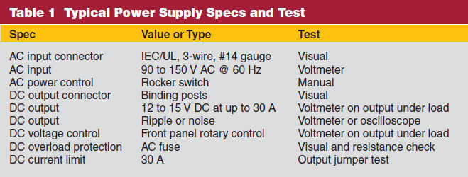
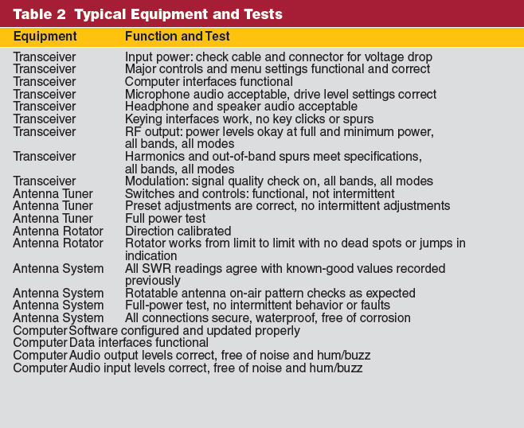

Experiment #148 — Proof of Performance
“You want truth? You can’t handle the truth!” goes the courtroom outburst from Jack Nicholson in A Few Good Men. The same can occasionally be said for finding out about how our station really performs! Until we get an unexpected surprise on the air or in our mailboxes in the form of an Official Observer report, many of us might not really know if our stations are doing what we think they are doing. How to find out? The broadcaster’s proof of performance can be a powerful friend to the amateur station owner, and it’s not as difficult to undertake as you may think, either.
What is a Proof of Performance?
Every broadcast and commercial station is required to regularly certify that it meets the technical standards required by the rules for the service under which its license is granted. Performing that ongoing certification — called a proof of performance — is part of what allows these powerful stations to transmit without constant engineering supervision. As we all know, things break, wear out, come loose, get water in them (or let the water out), corrode, are damaged — the ways in which radios and antennas can become defective are seemingly without number. Without an occasional inspection, it would be illogical to assume everything is functioning just fine. In fact, it’s probably more reasonable to assume the opposite!
Radio magazine has scanned and published online two 1970s-era proof of performance manuals; one for AM stations and one for FM stations.1 These manuals were typical of the documentation that guided thousands of “chiefs” (Chief Engineers) as they conducted the necessary testing, “…quite possibly the most important engineering assignment that most radio station chief engineers have…first of all, it demonstrates to the FCC that the station is at least able to meet minimum technical standards or…far exceed them. A satisfactory proof also assures the broadcaster that [the] facility is doing what it is supposed to do, at least technically.” The manuals go on to show the required test equipment and its configuration, what tests are needed and how to perform them, and provides forms for the necessary data.
The goal of a broadcast facility proof is to make sure that the entire programming chain, from the microphones and audio inputs to the transmitted signal, were in good order. Such testing checks noise, distortion, and frequency response of all audio handling equipment. (TV stations have similar requirements for video channels, even the digital signals.) Similar RF tests are done to be sure there are no spurious emissions. AM stations might even take a field strength meter a known distance from the antenna and check to be sure enough signal was being radiated. All this for a station just using one channel!
Proof of Performance for Hams
A mini-version of what the professionals do should be part of your station checkup and inspection, too. The bigger your station, the more comprehensive your proof should be, and the more it will tell you. Certainly, this sounds like a bother, but when would you rather find out that, say, your signal is way down on a band or that your microphone is intermittent? During a contest or public service drill? Or before, when you can do something about it? The latter, of course.
All ham stations are somewhat different, making it impossible to create a simple manual for all to follow. Nevertheless, there are many common elements and techniques. Figure 1 shows a typical station as a block diagram from the power supply and audio sources at the left all the way to the radiated RF at the right. If you draw a circle around each “box,” you’ll cross one or more arrows. Those arrows and the action or signal they represent are what you test when conducting the “proof.”

A Power Supply Proof
Let’s start simple and look at the power supply. What that power supply is supposed to be doing is listed in Table 1. Notice that not only is a performance specification given, but certain test methods or equipment are listed, too, such as a voltmeter or testing under load. Let’s give the supply a proof test like you might before taking it to Field Day. Open your shack notebook, (you do have a shack notebook, right?) note the date, copy Table 1, and start taking notes.

Crossing each of the power supply arrows in Figure 1 and starting with the ac input, check each item in turn. Yes, even the power cord! (You’d be surprised how often power cords get “temporarily” replaced with a light-duty cord, but are then forgotten about and are never seen again.) If your inputs are okay, proceed to the other arrow — the dc output — making sure all voltages are within spec, voltage adjustments work, and the output connectors are in good shape. Record that you tested all these things, the equipment you used to make the tests, and any values noted.
Load testing the power supply takes a little more planning. Assuming you don’t have a large power resistor, a good method is to set the transceiver on full power, FM mode, and connect it to a dummy load. While monitoring the power supply output voltage, press PTT and measure output voltage. Keep the load on for a few seconds or cycle it while watching for voltage drops. Check the output connectors and cables for heating up. Again, record the results.
Expanding Your Proof
A proof of performance doesn’t need to be incredibly detailed, but it should test or exercise the equipment features that you expect to work when you need them! An audio test can simply be an on-the-air radio check with a friend. Data interfaces can be verified to function properly by making a contact or by exercising a control or monitoring function. Table 2 lists typical equipment and some of the tests you can perform for it. Start simple and modify the list and tests as needed.

Don’t forget that your test equipment needs to be checked, as well. If you have a directional RF power meter or antenna analyzer, check it against a friend’s to be sure yours is giving reasonable readings. If the equipment is battery powered, proof of performance time is a good opportunity to change out the batteries for fresh ones.
Performing proof testing once a year or before an important operating event is not unreasonable. Perhaps this would be a good team exercise to make sure your EOC or Field Day station are ready to go. As a consequence, you will all become more familiar with the equipment and will no doubt notice something that needs fixing or doing. Make “proofing” your station a habit — you won’t regret it the first time you discover a problem that would have taken you off the air or damaged something expensive!
1www.radiomagonline.com/deep-dig/0005/proof-of-performance-manuals/31594